and
and  of hydrogen degenerate; vacuum fluctuations of the field and vacuum polarisation lift
of hydrogen degenerate; vacuum fluctuations of the field and vacuum polarisation lift  (Bethe).
(Bethe).Welton's picture (derivation)
Zero-point field makes the electron jitter,
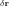
. Averaging the Coulomb potential: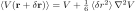
. With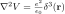
only s-states (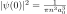
) are shifted. Each field mode drives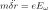
; summing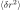
over vacuum modes between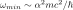
(atomic frequencies, below which the electron is bound) and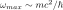
(above which it is relativistic) gives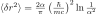
; with , hence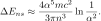
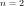
: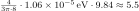
µeV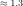
GHz. Bethe's non-relativistic self-energy (1947) gives 1040 MHz with the "Bethe logarithm"; vertex, anomalous moment and vacuum polarisation (−27 MHz) complete it (Lamb and Retherford 1947; Bethe 1947).Contributions to 2s½ − 2p½ (MHz)
| term | MHz |
|---|---|
| self-energy (+ vertex) | +1017 |
| anomalous moment | +68 |
| vacuum polarisation (Uehling) | −27 |
| total (theory, incl. higher) | 1057.8 |
Experiment
Lamb and Retherford (1947): metastable
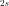
atoms (long-lived, see selection rules) are driven by microwaves to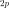
, which decays quickly; loss of metastables vs frequency gives the splitting. Today the 1s–2s two-photon line is known to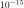
and tests QED with the proton radius as input.Worked example
Convert:
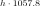
MHz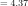
µeV, about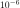
of the Lyman-α energy, and 1/10 of the fine-structure splitting (10.97 GHz).Engineering applications
Hydrogen spectroscopy determines the Rydberg constant and the proton radius (the "proton radius puzzle" with muonic hydrogen); QED level shifts are part of the error budget of optical clocks and frequency combs.
Pitfall
The Lamb shift is not the fine structure: fine structure depends on  , the Lamb shift separates states with the same
, the Lamb shift separates states with the same
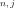
and different .
.